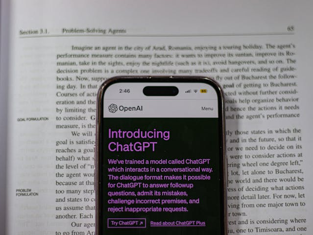

Automação de Tarefas Repetitivas
A IA pode automatizar tarefas rotineiras e repetitivas, reduzindo o tempo e os erros humanos. Isso melhora a produtividade e eficiência em empresas e no dia a dia.
Atendimento ao Cliente 24/7
Chatbots e assistentes virtuais como o ChatGPT, Siri e Alexa oferecem suporte contínuo, melhorando a experiência do usuário e reduzindo custos operacionais.
Precisão e Redução de Erros
A IA pode executar tarefas com alta precisão, reduzindo falhas humanas, principalmente em setores como saúde (diagnósticos médicos) e engenharia.
Melhoria na Segurança e Monitoramento

Sistemas de IA são usados para detecção de fraudes, reconhecimento facial e cibersegurança, aumentando a proteção contra ameaças.
Evolução Contínua e Aprendizado
A IA pode aprender e se adaptar com Machine Learning (Aprendizado de Máquina), tornando-se mais eficiente com o tempo sem precisar de programação manual constante.
Assistência na Medicina e Diagnósticos
IA ajuda médicos a diagnosticar doenças mais cedo e com maior precisão, além de auxiliar na descoberta de novos medicamentos.